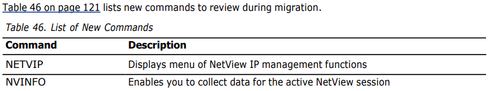

Appendix A. Changes from Tivoli NetView for z/OS V6R1 to Tivoli NetView for z/OS V6R2
For a summary of changes for the NetView V6R2 release, see “Summary of Changes for NetView V6R2
Program” on page 113.
See the following sections for new, changed, and deleted command lists, messages, samples, and
commands from the NetView V6R1 product:
• “Command Lists” on page 115
• “Messages” on page 116
• “Samples” on page 120
• “Command Changes” on page 121
Note: The lists are listed alphabetically from left to right.
For changes to the NetView for z/OS Enterprise Management Agent; see “Enterprise Management Agent
Changes” on page 122.
• “Automation” on page 113
• “IP Management” on page 113
• “Sysplex and System Management” on page 114
• “GDPS Continuous Availability Solution” on page 114
• “Additional Enhancements” on page 115
• “Library Changes” on page 115
For comparison information about prior NetView release functions, refer to the IBM Z NetView website.
• “New Command Lists” on page 116
• “Deleted Command Lists” on page 116
Do not issue these command lists from a NetView command line. Most of the NetView command lists that are included with the NetView program are used internally by the NetView program and might have unpredictable results when issued from a NetView command line.
• “New Messages” on page 116
• “Changed Messages” on page 118
New Messages
AQN043I
NO subtower_name server_type SOCKET PATH INFORMATION FORWARDED TO CONTROLLER,REASON 'reason'
AQN044I
ATTRIBUTE attribute_name IS MISSING FOR data_source REPLICATION EVENT class_name
AQN045I
INVALID VALUE RECEIVED FOR data_source REPLICATION EVENT class_name, ATTRIBUTE attribute_name
AQN046I
REPLICATION EVENT class_name IS NOT RECOGNIZED
AQN047I
data_source REPLICATION EVENT class_name, FORWARDED. RETURN CODE: return_code
AQN048I
data_source REPLICATION EVENT VERSION replication_version DOES NOT MATCH NETVIEW EVENT VERSION netview_version
AQN049I
DISPLAY OF REPLICATION WORKLOADS
AQN050I
DISPLAY OF Q REPLICATION CAPTURE SERVERS DATA
AQN051I
DISPLAY OF Q REPLICATION APPLY SERVERS DATA
AQN052I
ENT.SYN.prisec.site.domain FOR DOMAIN domain_id SPECIFIES SNA
AQN053I
command FAILED. Reason: reason. Reason Code: reason_code
AQN054I
REQUIRED ENT.ALT.CONTROLLERS STATEMENT MISSING
BNH825I
THE AT-TLS SECURITY TYPE IS X'security_type'.
BNH869W
THE CONNECTION TO THE NETVIEW WEB SERVICES SERVER 'srvrname' WAS REJECTED BECAUSE AT-TLS IS NOT CONFIGURED OR ACTIVE FOR THIS SERVER.
CNM618A
NetView subsystem ssi_name has not been initialized..
CNM743I
Some messages that were issued before the NetView subsystem was initialized were not logged.
CNM744E
The ALESERV token was not deleted: Return Code = return_code Reason Code = reason_code
CNM745E
The DSPSERV token was not deleted: Return Code = return_code Reason Code = reason_code
CNM746I
The user_module module was not deleted from the SYSLOG exit
CNM747I
The required number of plots in the CANZLOG data space are not available. Some messages might be missing.
CNM748I
The user_module module was deleted from the SYSLOG exit
CNM749A
Incompatible NetView program or subsystem is defined for subsystem ssi_name
CNM749A
Incompatible NetView program or subsystem is defined for subsystem ssi_name
CNM949I
obj IS TOO LONG
DWO038I
function IS NOT ALLOWED IN THE product ENVIRONMENT
DWO096E
part is not installed with attr_name attribute
FKX408I
TRACE INSTANCE STARTED FOR STACK stack BY OPERATOR operid ON TASK ctask AT SP sp
FKX409I
TRACE INSTANCE ENDED FOR STACKstack BY OPERATOR operid ON TASK ctask AT SP sp
FKX415I
TRACE INSTANCE SUSPENDED FOR STACK stack BY OPERATOR operid ON TASK ctask AT SP sp
FKX416I
TRACE INSTANCE SUSPENDED FOR STACK stack BY OPERATOR operid ON TASK ctask AT SP sp
FKX417I
TRACE INSTANCE action FAILED FOR STACK stack ON SP sp
FKX418I
TRACE INSTANCE STOPPED ON TASK task FOR STACK stack
FKX419I
TRACE INSTANCE ENDED ON TASK task FOR STACK stack
FKX463I
OPID REQUIRED FOR STOP OR STOPALL OF TRACE INSTANCE
FKX464I
OPID task DOES NOT HAVE AN ACTIVE TRACE INSTANCE
FKX465I
NO OPIDS DEFINED FOR TRACE INSTANCES
FKX466I
NO AVAILABLE OPIDS FOR TRACE INSTANCES
FKX467I
OPID task ALREADY HAS AN ACTIVE TRACE INSTANCE
Changed Messages
The following messages changed in one or more of the following ways:
• The message text changed.
• The value of a message variable insert changed.
• The information provided in a multiline write-to-operator (MLWTO) message changed.
For specific details of how a message is being presented by the NetView program, refer to the online message help.
AQN001I
NO SOCKET PATH NAMES FOUND FOR DATA SOURCE subtower_name DOMAIN domain
AQN002I
DATA COLLECTION FAILED FOR DATA SOURCE subtower_name, SOCKET PATH NAME path
AQN006I
DUPLICATE subtower_name, SOCKET PATH NAME path IGNORED
AQN007I
DISPLAY ACTIVE/ACTIVE DATA COLLECTION INFORMATION
AQN008I
REPLICATION SERVER SITUATION OR POLICY NAME IS name
AQN009I
DATA COLLECTION FOR subtower_name RESTARTED
AQN0010I
DATA COLLECTION FOR subtower_name ALREADY STARTED
AQN0011I
DATA COLLECTION FOR subtower_name ALREADY STOPPED
AQN012I
cmd COMMAND NOT PROCESSED. CURRENT VALUE interval FOR subtower_name MATCHES CHANGE VALUE.
AQN013I
DATA COLLECTION INTERVAL FOR subtower_name SET TO interval
AQN016A
Reply Yes if Tivoli Enterprise Monitoring Server is inactive on system system. Otherwise, reply No.
AQN019E
CONNECTION FAILURE TO server ON SOCKET PATH path. REPORTING MODULE=module_name. RC:
return_code REASON: reason
AQN023I
DISPLAY OF LOAD BALANCERS
AQN027I
DISPLAY OF role WORKLOADS FOR WORKLOAD NAME workload_name
AQN028I
SOCKET PATH NAME path NOT CONFIGURED FOR subtower_name
AQN029I
UNEXPECTED VALUE value RECEIVED FOR fieldname FOR DATA SOURCE subtower_name
AQN030I
DISPLAY OF REPLICATION SERVER WORKLOADS cworkload_name FOR DATA SOURCE type
AQN031I
DISPLAY OF type CAPTURE WORKLOAD DETAILS FOR WORKLOAD workload_name
AQN032I
DISPLAY OF type APPLY WORKLOAD DETAILS FOR WORKLOAD workload_name
AQN033I
DISPLAY OF Q REPLICATION DATA FOR SEND QUEUE send_queue WORKLOAD workload_name
AQN034I
DISPLAY OF Q REPLICATION DATA FOR RECEIVE QUEUE receive_queue WORKLOAD workload_name
AQN035I
DISPLAY OF Q REPLICATION CAPTURE SERVER server_job_name DATA ON SITE server_site
AQN036I
DISPLAY OF Q REPLICATION APPLY SERVER server_job_name DATA ON SITE server_site
AQN039I
TOWER ACTIVEACTIVE.REPLICATION.subtwr NOT ENABLED FOR DOMAIN domain
AQN040I
COMMON GLOBAL VARIABLE variable IS NOT DEFINED FOR DOMAIN domain
AQN041I
SOCKET PATH DEFINITION statement IS NOT SEQUENTIAL
AQN042I
NO subtower_name server_type SOCKET PATH INFORMATION FORWARDED TO CONTROLLER,
REASON 'reason'
AQN042I
MAXIMUM NUMBER OF subtower_name server_type SOCKET PATH DEFINITIONS EXCEEDED
BNH229I
option value mm/dd/yy hh:mm:ss updateid
BNH498I
NUMBER OF INTERFACES: numintf
BNH598I
NUMBER OF HIPERSOCKETS INTERFACES: numhiper
BNH608I
’requestname' REQUEST COMPLETED SUCCESSFULLY
BNH812
command ISSUED FOR task_name COMPLETED WITH STATUS code
BNH863I
DISPLAY OF NETVIEW WEB SERVICES INFORMATION
BNH881I
DATA COLLECTION FAILED FOR SUBTOWER subtower_name, REASON 'reason'
BNH898E
NETVIEW WEB SERVICES srvr_name INITIALIZATION FAILED DUE TO reason_text rc
BNH911I
request : NO DATA FOUND FOR 'subject'
CNM543I
UNABLE TO FIND NETVIEW SUBSYSTEM COMMUNICATIONS TABLE FOR ssi_name
CNM598W
SUBSYSTEM IS NOT ACTIVE FOR ssi_name
CNM742I
NO CANZLOG ARCHIVE BROWSE DATA SPACES CREATED
DSI002I (changed for IACz, no visible changes)
INVALID COMMAND: 'command'
DSI031I
SPECIFIED NAME 'name' INVALID
DSI823I
member HAS A MISSING OR INCORRECT SIGNATURE
DWO090A
action error for component. Maintenance required.
DWO155I
NETVIEW DOES NOT HAVE A JES JOBID
DWO384I
TIME-OUT OCCURRED. 'command' FOR 'target' IS TERMINATED.
EZL563E
ERROR ACCESSING domain1 OUTBOUND GATEWAY TO DOMAIN domain2 - RC= rc
EZL917E
ERROR OCCURRED. BROWSE LOG FOR MORE INFORMATION
FKX400I
tracetype SCHEDULED FOR SP sp BY OPERATOR operid
FKX401I
tracetype - DELAY TRACE SCHEDULED FOR SP sp BY operid
FKX402I
tracetype action START FOR SP sp FAILED - MESSAGE msgid RECEIVED.
FKX403I
tracetype STOPPED FOR SP spBY OPERATOR operid
FKX405I
TARGET DOMAIN/PROC FOR SP sp IS NOT VALID
FKX406I
tracetype - DELAYED TRACE FAILED FOR SP sp BY operid
FKX407I
DELAYED tracetype BLOCKED BY SECURITY FOR SP sp BY operid
FKX410I
UNABLE TO START tracetype ON SP sp - TRACE ALREADY ACTIVE
FKX411I
UNABLE TO STOP tracetype ON SP sp - TRACE NOT ACTIVE
FKX412I
START tracetype ON SP sp FAILED - TRACE ALREADY SCHEDULED
FKX413I
THE PROCNAME proc IS NOT DEFINED ON SP sp
New Samples
CNMSCMSG CNMSFMSG CNMSSCFG CNMSSNIT
CNMSSVNT CNMSS010 CNMSTMSG CNMS8050
CNMS8051 CNMS8052 DSICCDNV DSIOPFAU
DSIOPFEX DSIOPFIX DSIOPFST
• “New Commands” on page 121
• “Changed Commands” on page 121
New Commands

Changed Commands
The following commands have been changed:
• ACTVCTL
• ACTVLIFE
• ACTVREPL
• ALL (CANZLOG)
• BROWSE (NCCF)
• CANZLOG
• CNMECZFS
• DEFAULTS (NCCF)
• DISPMSG • DSITSTAT (REXX)
• DVIPCONN
• FIND (CANZLOG)
• FMTPACKT
• LIST (NCCF)
• MVS
• OVERRIDE
• PKTS
• PKTTRACE
• SECMIGR
• SOACTL
• All queries and workspaces that are new or changed for Version 6 Release 2 include the qualifier (V620) in the query and workspace descriptions. The identification of the version, release, and modification level for queries and workspaces began with Version 5 Release 4. Queries and workspaces that were part of the product before V5R4 do not include a qualifier.
• Table 47 on page 123 shows the changes to existing workspaces that are used for monitoring the status of workloads and other managed elements in the GDPS Continuous Availability solution.
• Four new workspaces and three new attribute groups are added for monitoring the status of workloads and other managed elements in the GDPS Continuous Availability solution. Table 48 on page 125 shows the workspaces that are new and the associated attribute group or groups.

• The following situations for the GDPS Continuous Availability solution are new:
– NAS_AA_RS_VSAMWorkloadState
– NAS_AA_RW_AggregationStatus
– NAS_AA_RW_ConsistencyGroups
– NAS_AA_RW_WorkloadLatency
– NAS_AA_VSAM_AppQPctFull_Crit
– NAS_AA_VSAM_AppQPctFull_Warn
– NAS_AA_VSAM_CapQPctFull_Crit
– NAS_AA_VSAM_CapQPctFull_Warn
• The following situation is new and is associated with the NetView Health node in the Navigator: – NAS_NVApp_Enterprise_Master
• Table 49 on page 126 shows the changes to existing take action commands for the GDPS Continuous Availability solution.
• The following take action commands for the GDPS Continuous Availability solution are new: